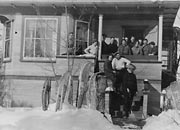
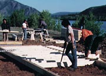
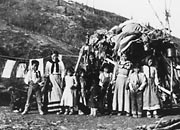
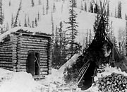
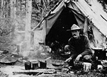
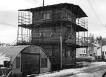
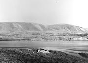

home (hom) n. [ME. < OE. ham, akin to G. heim < IE. base *kei-, to lie, homestead,, whence Gr. keimei, to lie down, rest, L. civis, townsman, HIDE3, ON. heimr, home; basic sense “place where one lies; dwelling”]
1. the place where a person (or family) lives; one’s dwelling place; specif., a) the house, apartment, etc. where one lives or is living temporarily; living quarters b) the region, city, state, etc. where one lives
2. the place where one was born or reared; one’s own city, state or country
3. a place thought of as home; specif., a) a place where one likes to be;
Webster’s New World Dictionary
In early times First Nations people built a variety of shelters to protect themselves from the weather. Different types of structures were used at different times of the year. There were lean-tos, circular tents with a conical pole frame, dome-shaped sapling frames covered with caribou or moose skins, moss houses and split-log houses as well as temporary shelters of brush and bark.
Initially, newcomers to the territory also needed temporary structures that were lightweight and easy to transport. Dawson, Whitehorse and Bennett were all tent cities in their early days. As communities became more settled, and lumber and other building supplies became available, tents were replaced by permanent structures. Sometimes tents were framed in with lumber, with the canvas left in place; sometimes small log cabins were built, with lean-tos and additions built on as needed.
First Nations people adopted new permanent structures, although many continue to use seasonal homes as well. As communities grew and developed, newcomers tried to recreate the appearance of the lifestyles they left behind in the south.
Homeowners added elaborate trim and details to their houses; businesspeople added false fronts to their structures to give an air of permanence and stability. Today a Yukon home can be anything from a log cabin to a condominium.
“Built alone, 1936. Pulled logs from Contact Ck. 10 miles down lake...whipsawed boards floor — 250 poles covered with foot of moss then dirt for roof. Cache on 12’ stumps, local poles. Logs wrapped with stove pipes. Cabin logs were rafted 10 miles from AgPb [silver-lead] prospect. Dogs pulled along beach.”
Anton Money, describing how he built his cabin in the Frances Lake area.
YA, Money collection, 84/83 #12
Continue to The Yukon, Our HomeWhere one likes to be
(Above) A group of “Dawson residents” with their dog teams, c.1900.
YA, Dawson City Museum collection #6350
A group of snowshoers poses on the steps of 206 Hawkins, c.1920. Mr. Newmarsh, Manager of the Bank of Commerce, and then owner of the house, is on the bottom step. RCMP member Jack Stewart is behind him; bank clerk Kenny Fife is fourth from left at the back.
YA, Harbottle collection #6194
Randy Hager, Terry Simon, Norman Silas and another member of the Selkirk First Nation work on the reconstruction of the Big Jonathan house, 1987.
Heritage Branch
A summer shelter with poles, somewhere on the Yukon River, c.1915.
YA, University of Alaska Archives collection #2965
These structures were photographed c.1890 at Camp Colonna, near Rampart House, temporary home to the United States Geological Survey.
Bancroft Library, Berkeley
A prospector cooks outside his tent, n.d.
YA, Stringer collection, 82/332 #51
One of Whitehorse’s famous log skyscrapers, c.1956, next to a quonset hut.
YA, Canada: Department of Defence collection, 91/37 #76603
The North-West Mounted Police had their first home in the Yukon at Forty Mile.
YA, National Archives of Canada collection, 88/138 #12165